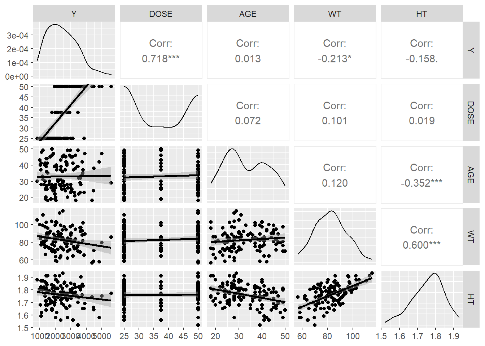
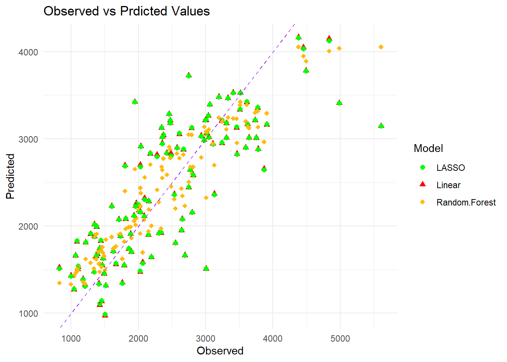
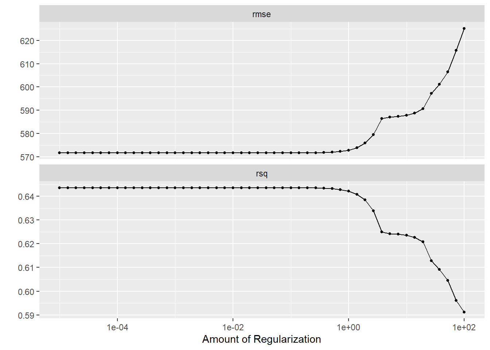
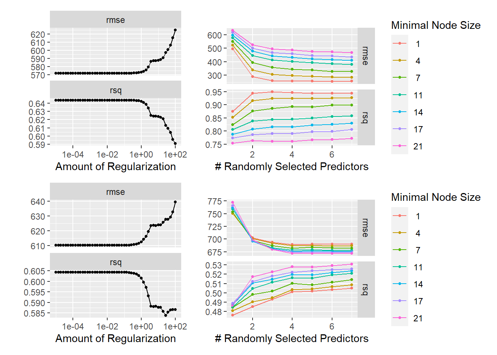

library(dplyr) #for data processing/cleaning
library(tidyr) #for data processing/cleaning
library(skimr) #for nice visualization of data
library(here) #to set paths
library(ggplot2) # for plots
library(tidymodels)
library(glmnet)
library(forcats) # for clubbing the factor variables
library(GGally)#for correlation plots
library(ranger)
library(dials)
library(patchwork)# For illustrating plots side by sideml-models-exercise
Mavoglurant modeling Exercise (Week 11)
This is a continuation of fitting-exercise from Week 8 and Week 10. This analysis uses the cleaned data including the variable RACE from the Week 8 exercise.
First, required packages are installed and loaded.
Setting a random seed during analysis step
rngseed = 1234Data is loaded
# path to data using here function
mavoglurant <- readr::read_rds("mavoglurant.rds")Checking the data
skimr::skim(mavoglurant)| Name | mavoglurant |
| Number of rows | 120 |
| Number of columns | 7 |
| _______________________ | |
| Column type frequency: | |
| factor | 2 |
| numeric | 5 |
| ________________________ | |
| Group variables | None |
Variable type: factor
| skim_variable | n_missing | complete_rate | ordered | n_unique | top_counts |
|---|---|---|---|---|---|
| SEX | 0 | 1 | FALSE | 2 | 1: 104, 2: 16 |
| RACE | 0 | 1 | FALSE | 4 | 1: 74, 2: 36, 88: 8, 7: 2 |
Variable type: numeric
| skim_variable | n_missing | complete_rate | mean | sd | p0 | p25 | p50 | p75 | p100 | hist |
|---|---|---|---|---|---|---|---|---|---|---|
| Y | 0 | 1 | 2445.41 | 961.64 | 826.43 | 1700.53 | 2349.14 | 3050.22 | 5606.58 | ▆▇▆▂▁ |
| DOSE | 0 | 1 | 36.46 | 11.86 | 25.00 | 25.00 | 37.50 | 50.00 | 50.00 | ▇▁▂▁▆ |
| AGE | 0 | 1 | 33.00 | 8.98 | 18.00 | 26.00 | 31.00 | 40.25 | 50.00 | ▅▇▃▅▅ |
| WT | 0 | 1 | 82.55 | 12.52 | 56.60 | 73.18 | 82.10 | 90.10 | 115.30 | ▂▇▇▅▁ |
| HT | 0 | 1 | 1.76 | 0.09 | 1.52 | 1.70 | 1.77 | 1.81 | 1.93 | ▁▃▆▇▃ |
I combined the two levels 7 and 88 of the variable ‘RACE’ into a single level and re-coded it as 3.
#Re-coding RACE categories 7 and 88 as 3
mavoglurant <- mavoglurant %>%
mutate(RACE = fct_recode(RACE,
'3' = '7',
'3' = '88'))Pairwise correlations
Next, I created a pairwise correlation plot for the continuous variables to check if any two variables are highly correlated.
#Using ggpairs to create the correlation plot
cor_pairs <- mavoglurant[, c("Y", "DOSE", "AGE", "WT", "HT")]
ggpairs(cor_pairs,
upper = list(continu = wrap("cor", size = 5)),#Display correlation coefficients
lower = list(continuous = "smooth") #Display scatter plots with smooth lines
)
The correlation between DOSE and Y is observed to be 0.718, and between WT and HT, it stands at 0.600. However, these correlations do not reach the levels that would be concerning for excessive collinearity, as nothing exceeds an absolute value of 0.9. This indicates that collinearity is unlikely to be and issue for the analysis.
Feature Engineering
To mitigate the correlation effects of HT and WT, those two variables are combined into a single variable BMI. Though the units of measurements are not given for the HT and WT variables, from their valuesthose appear to be in kg and meters. Based on these metrics, a column of BMI is added to the data.
Metric BMI Formula BMI = weight (kg) / [height (m)]^2
mavoglurant <- mavoglurant%>%
mutate(BMI=WT / HT^2 )Model Building
The next step is the analysis phase, which involves fitting of three distinct models with all predictors. 1. Linear Model 2. LASSO Regression 3. Random Forest (RF)
First Fit
A linear model is fitted incorporating all the predictors.
set.seed(rngseed)I created recipe for each of the linear, LASSO and Random Forest models.
For the LASSO model, factor variables are encoded using dummy variables and numerical variable normalized - a process that is also applied to linear model. However, for the Random Forest model, I deviated from this recipe when comparing rmse values with those listed on the Assessments page of the course website.
#Preparing recipe
#Recipe for linear and LASSO models
recipe_lin_LASSO<-
recipe(Y ~ ., data = mavoglurant) %>%
step_dummy(all_nominal(), -all_outcomes()) %>%
step_normalize(all_predictors())
#Recipe for random forest model
recipe_RF<-
recipe(Y ~ ., data = mavoglurant)Next, I coded the models.
# Defining Linear model
lin_model <- linear_reg()%>%
set_engine ("lm")%>%
set_mode("regression")
# Defining the LASSO model
LASSO_model<- linear_reg(penalty = 0.1, mixture = 1)%>%
set_engine("glmnet")%>%
set_mode("regression")
#Defining Random forest model
RF_model <- rand_forest()%>%
set_engine("ranger", seed = rngseed)%>%
set_mode("regression")I set up the workflow for all the models.
#workflow for linear model
lin_workflow <- workflow()%>%
add_model(lin_model)%>%
add_recipe(recipe_lin_LASSO)
#workflow for LASSO model
LASSO_workflow <- workflow()%>%
add_model(LASSO_model)%>%
add_recipe(recipe_lin_LASSO)
#workflow for random forest model
RF_workflow <- workflow()%>%
add_model(RF_model)%>%
add_recipe(recipe_RF)I fitted the models.
lin_fit <- lin_workflow %>%
fit(data = mavoglurant)
LASSO_fit <- LASSO_workflow %>%
fit(data = mavoglurant)
RF_fit <- RF_workflow %>%
fit(data=mavoglurant)Next step is model prediction and model performance evaluation.
#Computing model predictions
lin_predicts <- predict(lin_fit, new_data = mavoglurant)
LASSO_predicts <- predict(LASSO_fit, new_data = mavoglurant)
RF_predicts <- predict(RF_fit, new_data = mavoglurant)
#augment to evaluate performance metric
lin_aug <- augment(lin_fit, mavoglurant)
lin_aug %>% select(Y, .pred)# A tibble: 120 × 2
Y .pred
<dbl> <dbl>
1 2691. 1666.
2 2639. 1951.
3 2150. 1896.
4 1789. 1548.
5 3126. 2369.
6 2337. 1921.
7 3007. 1510.
8 2796. 2156.
9 3866. 2658.
10 1762. 1352.
# ℹ 110 more rowsLASSO_aug <- augment(LASSO_fit, mavoglurant)
LASSO_aug %>% select(Y, .pred)# A tibble: 120 × 2
Y .pred
<dbl> <dbl>
1 2691. 1665.
2 2639. 1951.
3 2150. 1901.
4 1789. 1553.
5 3126. 2358.
6 2337. 1929.
7 3007. 1513.
8 2796. 2154.
9 3866. 2644.
10 1762. 1345.
# ℹ 110 more rowsRF_aug <- augment(RF_fit, mavoglurant)
RF_aug %>% select(Y, .pred)# A tibble: 120 × 2
Y .pred
<dbl> <dbl>
1 2691. 2233.
2 2639. 2431.
3 2150. 1939.
4 1789. 1822.
5 3126. 2698.
6 2337. 1974.
7 3007. 2326.
8 2796. 2600.
9 3866. 2965.
10 1762. 1625.
# ℹ 110 more rowsSubsequent step is calculation of RMSE for all the models.
lin_rmse <- lin_aug %>% rmse(truth=Y, .pred)
LASSO_rmse <- LASSO_aug %>% rmse(truth=Y, .pred)
RF_rmse <- RF_aug %>% rmse(truth = Y, .pred)
lin_rmse_df <- data.frame(Model = "Linear", RMSE = lin_rmse$.estimate)
LASSO_rmse_df <- data.frame(Model = "LASSO", RMSE = LASSO_rmse$.estimate)
RF_rmse_df <- data.frame(Model = "Random Forest", RMSE = RF_rmse$.estimate)
#combining the three rmse's
rmse_mavo <- rbind(lin_rmse_df, LASSO_rmse_df, RF_rmse_df)
#print
rmse_mavo Model RMSE
1 Linear 571.5954
2 LASSO 571.6504
3 Random Forest 361.6562The Random Forest model outperformed the other two models in terms of RMSE metrics. Both the Linear model and LASSO yielded similar RMSE values. Examination of the correlation plot revealed that the predictors do not exhibit high collinearity. Given that the penalty for the LASSO model was set at only 0.1, this might not have been sufficient to significantly alter the estimates in comparison to those obtained from the Linear model.
For a visual impression of the the predicted values from all the models I plotted the observed values against all the predicted values. The plots revealed that the predicted values from the Random Forest model are closer to the line of perfect fit than the ones from linear and LASSO models.
#Combining the Observed and all the predicted values from the different models in a data frame
combined_mavo <- data.frame(Observed = mavoglurant$Y,
Linear=lin_predicts$.pred,
LASSO = LASSO_predicts$.pred,
"Random Forest"= RF_predicts$.pred
)
#Converting the data from wide to long format
mavo_long <- pivot_longer(combined_mavo, cols = -Observed, names_to = "Model", values_to = "Predicted")
#Plotting of observed vs predicted data
ggplot(mavo_long, aes(x=Observed, y = Predicted, color= Model, shape = Model))+
geom_point(size=2)+
geom_abline(intercept = 0, slope = 1, linetype = "dashed", color = "purple") +
theme_minimal()+
labs(title ="Observed vs Prdicted Values",
x = "Observed",
y= "Predicted",
color = "Model",
shape = "Model") +
scale_color_manual(values = c("Linear" = "red", "LASSO"= "green", "Random.Forest" = "darkgoldenrod1"))+
scale_shape_manual(values = c("Linear" = 17, "LASSO" = 16, "Random.Forest" = 18)) # Custom shapes
Tunning the models (without CV)
Next, I wrote the code that tunes the LASSO and Random Forest models WITHOUT using cross-validation for resampling. For this purpose, first I set up the LASSO model to be tunable and included this model in the recipe and workflow
Tunning the LASSO model
#Setting up the model so that the tuning function (tune())can work
LASSO_tunable <- linear_reg(penalty = tune(), mixture = 1)%>%
set_engine("glmnet")%>%
set_mode("regression")
#workflow for tunable LASSO model
LASSO_wf_tunable <- workflow()%>%
add_model(LASSO_tunable)%>%
add_recipe(recipe_lin_LASSO) # recipe_lin_LASSO coded earlierFirst I defined the range of penalty parameters to tune over. The range is from 1E-5 to 1E2. I picked 50 values linearly spaced on a log scale for tuning.
#LASSO - defining the grid of parameters from 1E-5 to 1E2
penalty_grid <- penalty(range= c(-5, 2)) %>%
#Picking 50 values linearly spaced on a log scale
grid_regular(levels=50)To tune the grid using the workflow object, first it requires resampling with the entire data. Then the LASSO model will be tuned with the grid and the resamples prepared.
#For reproducicility
set.seed(rngseed)
#Resampling the data using apparent function. This resampled data will also be used in Random Forest tuning in the following section
resamples <- apparent(data=mavoglurant)
#Tuning the LASSO model using the resamples
LASSO_tune_results <- LASSO_wf_tunable %>%
tune_grid(resamples = resamples, grid = penalty_grid)Visualizing the diagnostics from the LASSO tuning results to evaluate model perfromance.
#plotting the diagnostics
p1<-LASSO_tune_results%>%
autoplot()
p1
The model diagnostic plot reveals that LASSO performs well at lower penalty values as evidenced by the value of corresponding RMSE metrics. As the penalty value goes up, especially after a certain threshold, the model becomes more regularized and some coefficients may shrink up-to zero increasing bias and the RMSE value. As we have noticed in earlier part of the analysis, LASSO behaves similar to a linear model for very low penalty values resulting to similar values of RMSE. It is because at lower RMSE values the model is less regularized.
Tunning the Random Forest model
First, I updated the model and workflow, setting the mumber of trees at 300. The tunning will focus on the parameters mtry and min_n, while all other parameters will remain at their default settings.
#Setting up the model for tuning
RF_tunable <- rand_forest(trees=300, mtry = tune(), min_n = tune())%>%
set_engine("ranger", seed = rngseed)%>%
set_mode("regression")
#workflow for tunable LASSO model
RF_wf_tunable <- workflow()%>%
add_model(RF_tunable)%>%
add_recipe(recipe_RF) # recipe_lin_LASSO coded earlierI explored 7 x 7 parameter combinations by setting a tuning grid with the grid_regular() function, and setting the range for mtry from 1 to 7, and min_n from 1 to 21, with each parameter having levels.
#Defining the tuning grip for Random forest
RF_grid <- grid_regular(mtry(range=c(1,7)), min_n(range = c(1,21)), levels = 7)
#Tuning the Random Forest Model:
RF_tune_results <- RF_wf_tunable %>%
tune_grid(resamples = resamples, grid = RF_grid)#same resampled data from LASSO usedVisualizing the diagnostics Random Forest tuning results.
#plotting the diagnostics
p2<-RF_tune_results%>%
autoplot()
p2
The diagnostic plot illustrates RMSE values across various tuning parameters, revealing that optimal results are achieved with higher number of randomly selected predictrs (mtry) values and lower minimal node size (min_n) values.
Tunning with CV
This phase involves tuning of both the LASSO and Random Forest (RF) models, employing resampling via 5-fold cross-validation with 5 repeatations. First, I set up the resample object, subsequently utilizing the resamples to fine-tune both models.
#For reproducibility
set.seed(rngseed)
#Create resample object with cross-validation
resamples_cv<-vfold_cv(mavoglurant, v=5, repeats = 5)
#Tunning the LASSO model
LASSO_tune_results_cv <- LASSO_wf_tunable %>%
tune_grid(resamples = resamples_cv, grid = penalty_grid)
#Tunning the RF model
RF_tune_results_cv <- RF_wf_tunable %>%
tune_grid(resamples = resamples_cv, grid = RF_grid)Plotting the tuning results of LASSO and Random Forest models.
# Analyze LASSO tuning results
p3<-autoplot(LASSO_tune_results_cv)
# Analyze RF tuning results
p4<-autoplot(RF_tune_results_cv)
p1+p2+p3+p4
The top two are the LASSO and RF model diagnostic plots before using cross-validation (CV) and the bottom two are the ones post cross-validation. In both cases, the use of CV has led to higher RMSE values. This is because CV is designed to provide a more robust estimation of a model’s performance by reducing overfitting.The initial lower RMSE values could suggest overfitting.
Comparing the pre and post cross-validation diagnostics, it appears LASSO model generally has lower RMSE values, signaling better predictive performance, particularly with smaller penalties. At a lower penalty, the LASSO model applies smaller shrinkage to the coefficients and retains more model complexity, potentially leading to lower RMSE.
Conversely, the RF model shows higher RMSE values after cross-validation. One of the reasons could be the smaller data size.RF creates each tree by using a different set of data points and subset of features. This randomness can lead to variability in models’ performance across different CV folds, especially when the data size is smaller.
RF model performs well on data where the relationship between the features and the outcome is nonlinear and complex. However, if the true underlying model is linear or nearly linear, simpler models like LASSO might perform better.
Based on these observations, it appears that the LASSO model performs better in terms of RMSE when appropriately penalized.